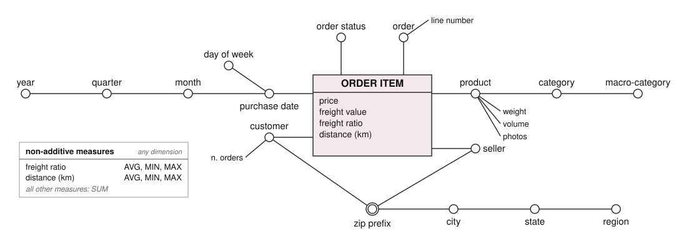
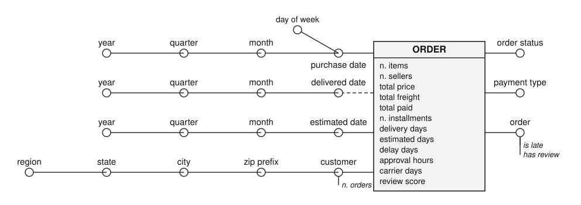
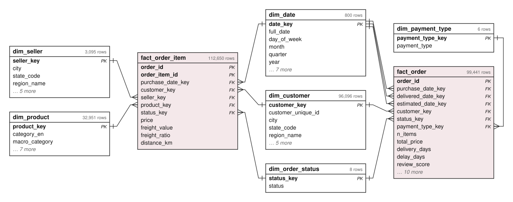
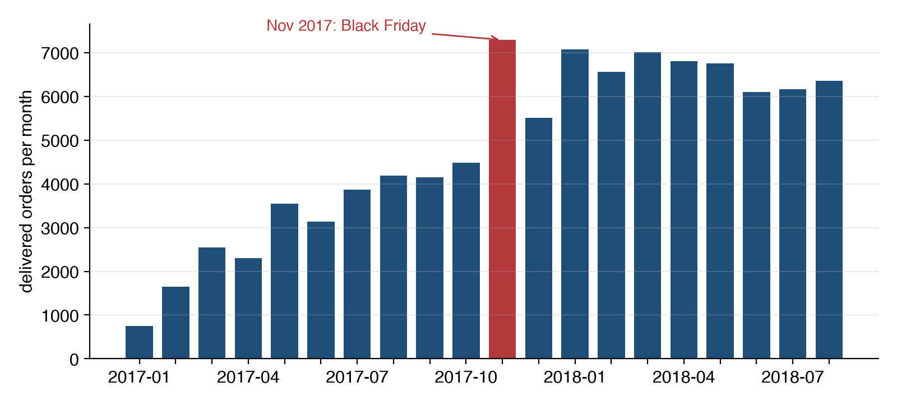
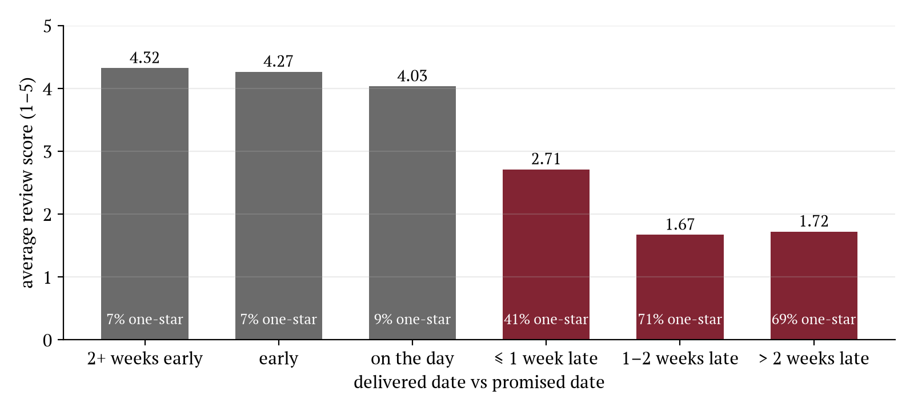
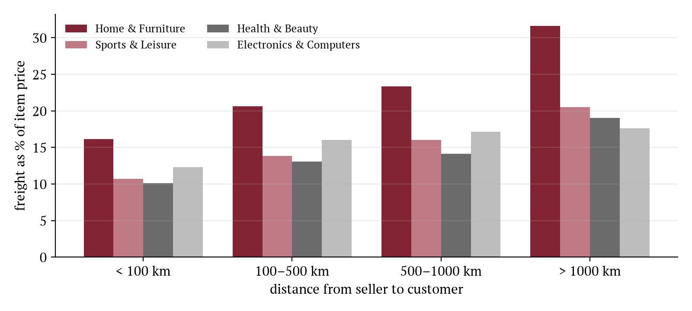

| Problem in the files | Numbers | What it would break |
|---|---|---|
customer_id is generated for every order | 99,441 ids, 96,096 people | the customer dimension |
review_id not unique; orders with several reviews | 789 ids on 2+ orders · 547 orders | joins duplicate the orders |
| several payment rows per order | 103,886 rows, 99,440 orders | payment as an order attribute |
| ~52 coordinates per zip prefix, 42 outside Brazil | 1,000,163 rows, 19,010 prefixes | geography, distances |
| seller city typed by hand | sbc/sp, 04482255, an e-mail | the seller hierarchy |
| products without category, categories without translation | 610 products · 2 categories | the product hierarchy |
| orders without lines; orders with several sellers | 775 · 1,278 | "the seller of an order" |
Profiled with DuckDB before writing the ETL. Twelve problems in total, each handled in a named SQL file (docs/DESIGN.md §3).
CREATE TABLE … AS SELECT on the previous layer, and each file can be read and re-run on its ownThe key of a review is the order, not review_id. The most recent one is kept: DISTINCT ON (order_id) ordered by answer time. The average of two different scores would be a score nobody gave.
dim_customer is built on customer_unique_id (96,096 people), with the address of the most recent order. A map table keeps the per-order id for loading the facts.
Samples outside Brazil dropped, most frequent state and city, median latitude and longitude, so a few wrong samples do not move the point. The seller → customer distance is the haversine between the two points.
State → region from IBGE (27 rows). Category → macro-category, 73 → 12, defined by hand. Translation file completed; products without category go to unknown.

Grain: one line of an order · 112,650 instances.
order_id is a degenerate dimension
Grain: one order · 99,441 instances. One date hierarchy shared by three roles (double circle); the dash marks the optional delivered date (2,965 orders have none).
order_id.
Generated from the PostgreSQL catalog: one line per foreign key, crow's foot on the many side. Compact view; every column is in docs/dfm/star_schema.svg.
| Macro-category | Revenue (R$) | Share |
|---|---|---|
| Home & Furniture | 2,853,087 | 21.6 % |
| Sports & Leisure | 2,220,659 | 16.8 % |
| Electronics & Computers | 1,841,712 | 13.9 % |
| Health & Beauty | 1,623,276 | 12.3 % |
| Fashion & Accessories | 1,502,217 | 11.4 % |
| 7 more | 3,180,547 | 24.1 % |
| Region | Orders | Revenue share | Freight / price |
|---|---|---|---|
| Southeast | 66,204 | 65.4 % | 15.2 % |
| South | 13,813 | 14.4 % | 17.7 % |
| Northeast | 9,045 | 11.3 % | 21.7 % |
| Central-West | 5,619 | 6.4 % | 17.6 % |
| North | 1,797 | 2.5 % | 22.7 % |
Delivered orders, revenue = item prices (R$ 13.2 M). ROLLUP on the product hierarchy, GROUPING SETS on the geographic one.
housewares grows +76 % from 2017 to 2018
Slice to the complete months (Jan 2017 to Aug 2018), month × year pivot, drill-down to the day.
LAG window function); December falls by 26 %| Seller → customer distance | Orders | Days | Promised | Late | Review |
|---|---|---|---|---|---|
| < 100 km | 17,690 | 6.5 | 15.9 | 4.5 % | 4.29 |
| 100–500 km | 36,461 | 11.5 | 23.5 | 6.2 % | 4.20 |
| 500–1000 km | 25,392 | 14.3 | 26.9 | 7.2 % | 4.13 |
| 1000–2000 km | 9,608 | 18.0 | 30.7 | 9.6 % | 4.07 |
| > 2000 km | 5,573 | 21.2 | 33.8 | 12.1 % | 3.99 |
Delivered single-seller orders. Distance from the line fact, delivery from the order fact: drill-across on order_id.
distance_km in the reconciled layer
Delivered orders with a review; delay = delivered date − promised date, then dice by region and by quarter.

CUBE macro-category × distance band on the line fact; ranking and cumulative share of the sellers with window functions.
Row counts of facts and dimensions equal the sources; the two facts agree on totals (Σ total_price = Σ price); n_items equals the number of lines; is_late is consistent with delay_days; the calendar has no gaps. A violation raises an exception and stops the build.
Money and counts are summed; days, distances and ratios are averaged; the review is a judgement, so average or distribution, never a sum.
| Materialised view | Rows |
|---|---|
| month × product hierarchy × state × status | 13,417 |
| seller region × customer region × year | 56 |